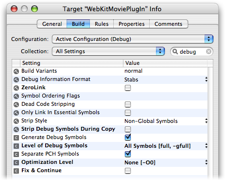

Q: I am writing a WebKit Plug-in, how can I debug it in Xcode?A: Follow these steps to debug a WebKit Plug-in in Xcode 2.4.1: First, set the custom executable to Safari. To do this, open your plugin project and select the "New Custom Executable..." item from the "Project" menu. This will open a window for specifying the custom executable application. Use the Browse button to select Safari. Second, in your build settings, make sure that the "Strip Debug Symbols During Copy" option is OFF and the "Generate Debug Symbols" option is ON. Also, you should set your optimization level to a low setting so the debugger can operate properly. The option settings shown in Figure 1 illustrate the propper settings for debugging a WebKit Plug-in.
Figure 1: Xcode's inspector window showing settings for the debug configuration of the project.  Third, add a new Run Script build phase to your project. The script shown in Listing 1 is a /bin/sh script that you can copy and paste into any Xcode Internet plug-in project that you would like to debug using Xcode's built in debugger. This script checks the build configuration and if you are in debugging mode, it will create a symbolic link to your plug-in in the Internet Plug-Ins folder inside of the current user's Library folder. Listing 1: /bin/sh script to use as a Xcode Run Script build phase to put a WebKit Plug-in in place for debugging
# clean up any previous products/symbolic links in the Internet Plug-Ins folder
if [ -a "${USER_LIBRARY_DIR}/Internet Plug-Ins/${FULL_PRODUCT_NAME}" ]; then
rm -Rf "${USER_LIBRARY_DIR}/Internet Plug-Ins/${FULL_PRODUCT_NAME}"
fi
# Depending on the build configuration, either copy or link to the most recent product
if [ "${CONFIGURATION}" == "Debug" ]; then
# if we're debugging, add a symbolic link to the plug-in
ln -sf "${TARGET_BUILD_DIR}/${FULL_PRODUCT_NAME}" \
"${USER_LIBRARY_DIR}/Internet Plug-Ins/${FULL_PRODUCT_NAME}"
elif [ "${CONFIGURATION}" == "Release" ]; then
# if we're compiling for release, just copy the plugin to the Internet Plug-ins folder
cp -Rfv "${TARGET_BUILD_DIR}/${FULL_PRODUCT_NAME}" \
"${USER_LIBRARY_DIR}/Internet Plug-Ins/${FULL_PRODUCT_NAME}"
fi
After these steps, whenever your current build configuration is set to debug and you click "Build and Run" in Xcode, Xcode will put a symbolic link to your WebKit Plug-in in the the "Internet Plug-Ins" folder and launch Safari. If you have any breakpoints set in your plug-in and breakpoints are enabled, then Xcode will stop in your plug-in and allow you to use its debugger to step through code and debug just as you would in any other project. Document Revision History| Date | Notes |
|---|
| 2007-06-05 | Minor editorial corrections. | | 2006-11-16 | Directions for debugging a WebKit plug-in in Xcode. |
Posted: 2007-06-05
|